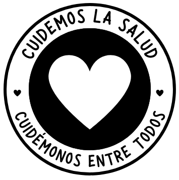

Nombre de la página
La Salud Primero
Eslogan
Recuerda siempre, cuida tu memoria
Logo
Favicon
Paleta de colores
Introduccion
Nuestra propuesta se centra en la integración de la salud mental y el bienestar emocional en el desarrollo y el uso de juegos digitales. Abordaremos cómo los videojuegos y otras formas de entretenimiento interactivo pueden influir positivamente en la salud mental, así como los desafíos y las prácticas recomendadas para desarrolladores y usuarios.
¿Por qué es importante cuidar nuestra salud mental?
Nuestra salud mental influye directamente en nuestra calidad de vida. Cuando estamos emocionalmente equilibrados, somos más capaces de enfrentar los desafíos, manejar el estrés y mantener relaciones saludables. Además, promueve una mejor toma de decisiones y una mayor productividad en nuestras actividades diarias.
Enlaces Informativos
Organizacion Mundial de la Salud (OMS)
National Center for School Mental Health
Perfil del usuario del sitio
Nos dirigimos a gamers de todas las edades interesados en el impacto de los juegos en la salud mental y emocional. Nuestro público objetivo incluye: Edad: Adolescentes y adultos jóvenes principalmente, aunque también abarcamos todas las edades. Sexo: Equitativo, con una ligera inclinación hacia hombres en algunos segmentos. Características: Interés en juegos digitales, conciencia sobre la salud mental, y una disposición a explorar cómo los juegos pueden afectar el bienestar personal.
Imagen general a transmitir:
La página web transmite una imagen de accesibilidad y compromiso con el bienestar mental, ofreciendo un recurso valioso y confiable para individuos, familias y profesionales interesados en aprender más y mejorar la salud mental.
Link a repositorio
Link a figma
Dominio utilizado
Dado por github pages